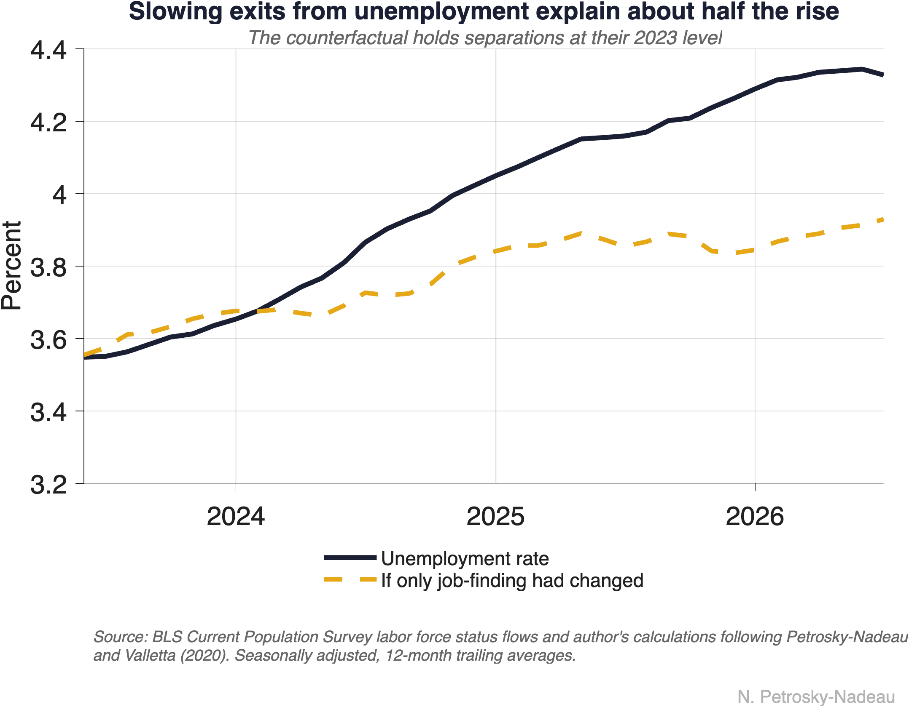
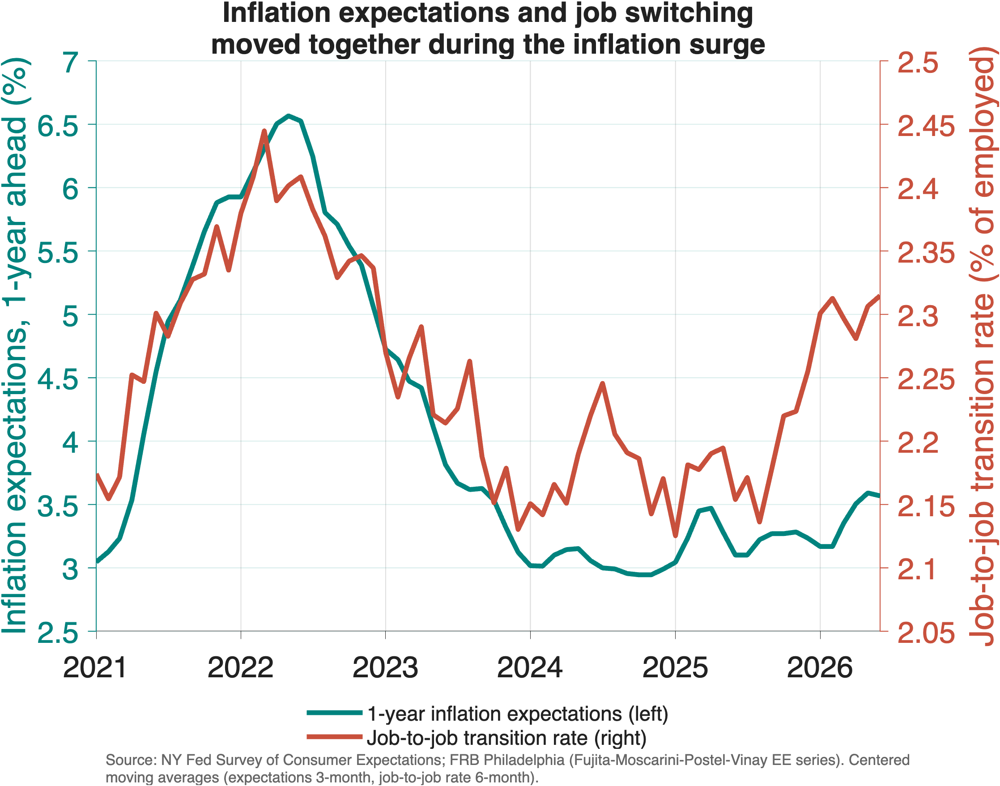
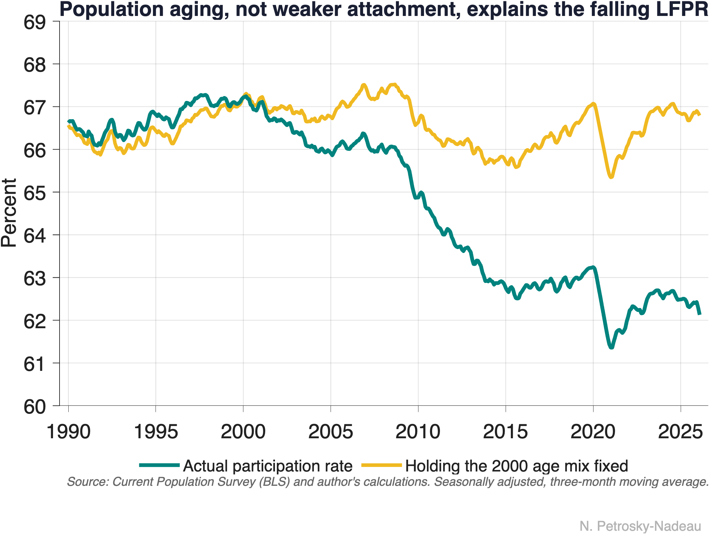
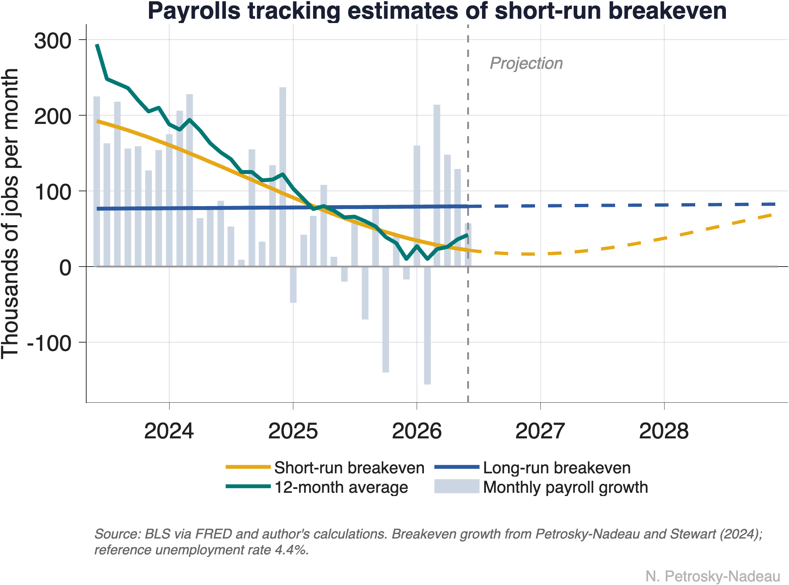
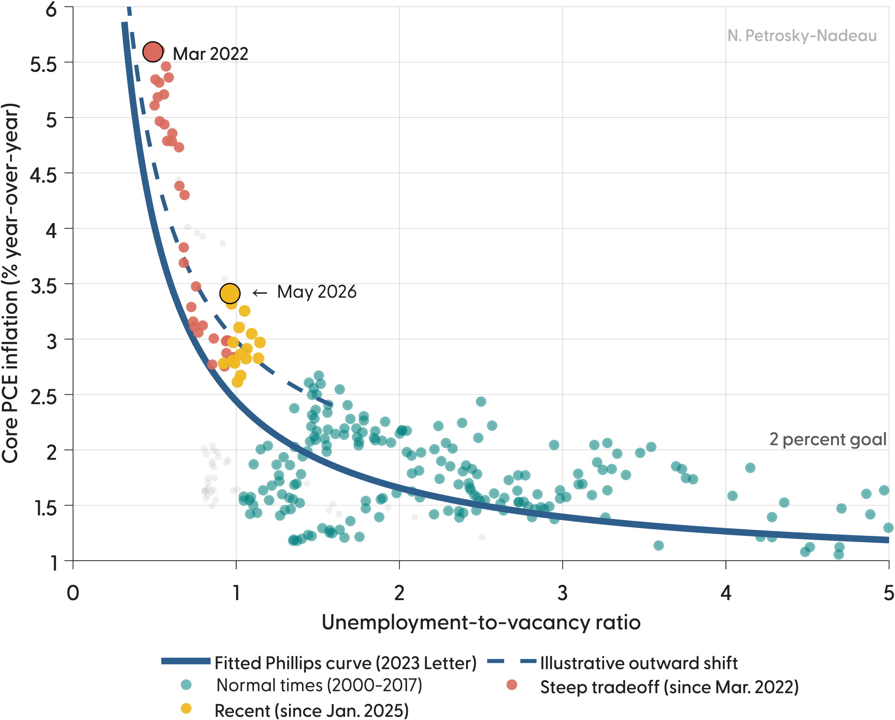
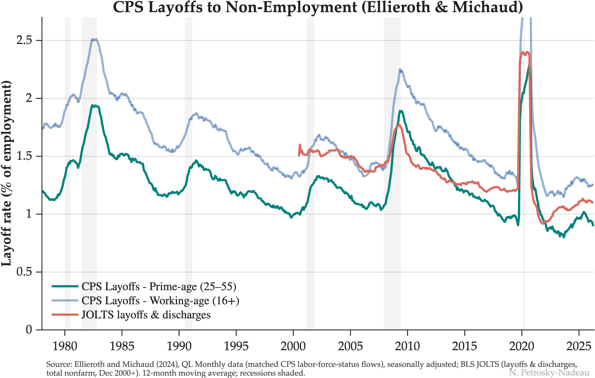
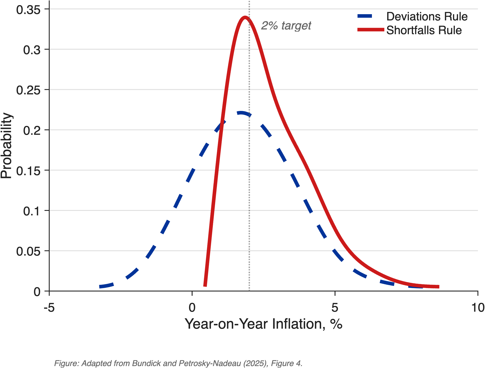

Insights › Economic Notes
Economic Notes
Short research notes on the labor market, each built around one or two charts
 Low Turnover Starts with the Shortest Jobs
Most of the fall in job turnover since 1999 came from jobs that end within their first quarter, and the pattern has continued through 2025.
Low Turnover Starts with the Shortest Jobs
Most of the fall in job turnover since 1999 came from jobs that end within their first quarter, and the pattern has continued through 2025.

Two Ways to a Higher Unemployment Rate Unemployment rose from 3.6% to about 4.5% between early 2023 and late 2025. The flows into and out of unemployment show which margin moved.
Keeping Up with Inflation, One Job Change at a Time A 1 point rise in expected inflation raises the chance of searching for a new job by about 0.7 point, roughly 40% of the post-pandemic rise in job switching.
What the Overall Participation Rate Hides Population aging, not weaker attachment to work, accounts for most of the 5-point fall in participation since 2000.
How Many Jobs Is Enough? Job growth cooled from about 150,000 to 40,000 a month with little change in unemployment, because the breakeven pace fell just as fast. It is set to rise again.
When the Curve Moves, It's Hard to Stick the Landing Since January 2025, core PCE inflation has run about 0.9 point above the stable Phillips curve that mapped a soft landing in 2023.
How Unusual Is Today's Low-Fire Labor Market? Measured back to 1978 and adjusted for the aging workforce, today’s low prime-age layoff rate is close to what earlier strong expansions produced.
From Deviations to Shortfalls Changing the employment mandate from “deviations” to “shortfalls” raises average inflation by about 90 basis points in a calibrated model, but nearly eliminates episodes at the zero lower bound. One Sector Carries the Labor Market
Education and health services have carried nearly all of recent payroll growth, while most other major sectors contract or stagnate.
One Sector Carries the Labor Market
Education and health services have carried nearly all of recent payroll growth, while most other major sectors contract or stagnate.